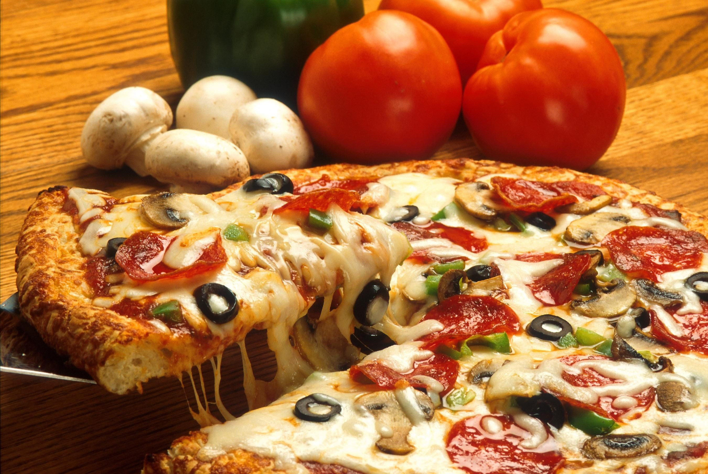

Homemade Pizza recipe

Description:
Homemade pizza is a fun and delicious way to enjoy a classic dish.
With a soft dough, rich tomato sauce, melted cheese, and your favorite toppings,
it's perfect for sharing with friends or family.
Ingredients:
For the dough:
- 3 1/2 cups all-purpose flour
- 1 cup warm water
- 2 tablespoons olive oil
- 1 teaspoon salt
- 1 teaspoon sugar
- 1 packet (7g) active dry yeast
For the sauce:
- 1 cup tomato sauce
- 1 clove garlic, minced
- 1 tablespoon olive oil
- 1 teaspoon oregano
- Salt and pepper to taste
Toppings:
- Shredded mozzarella cheese
- Sliced ham
- Sliced mushrooms
- peppers
- Olives
- Onions
Instructions:
- Make the dough
- In a bowl, mix warm water, sugar, and yeast.
Let it rest for 10 minutes until foamy.
- Add flour, salt, and olive oil.
Mix and knead the dough for about 10 minutes until smooth.
- Cover the dough and let it rise for 1 hour in a warm place until it doubles in size.
- Prepare the sauce:
- Heat olive oil in a pan. Add garlic and cook for 1 minute.
- Add tomato sauce, oregano, salt, and pepper. Cook for 10 minutes over low heat. Set aside.Add tomato sauce, oregano, salt, and pepper.
Cook for 10 minutes over low heat. Set aside.
- Shape the pizza:
- Preheat the oven to 220°C (430°F).
- Punch down the dough and divide it into 2 balls.
- Roll out each ball into a circle and place on a pizza tray.
- Assemble:
- Spread a layer of tomato sauce over the dough.
- Add shredded cheese and your favorite toppings.
- Bake:
- Bake in the oven for 12-15 minutes or until the crust is golden and the cheese is melted and bubbly.
- Serve:
- Let it cool slightly, slice, and enjoy!
Home>